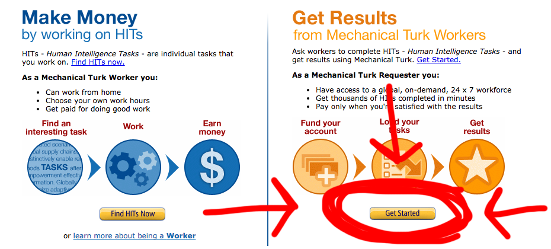
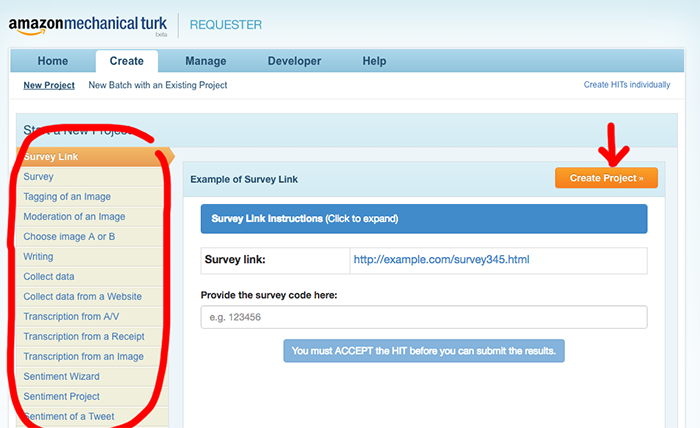
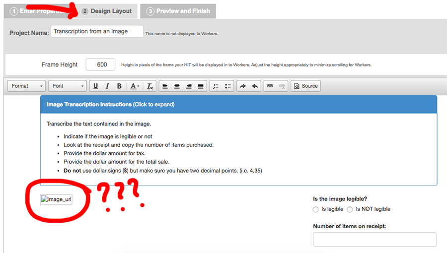
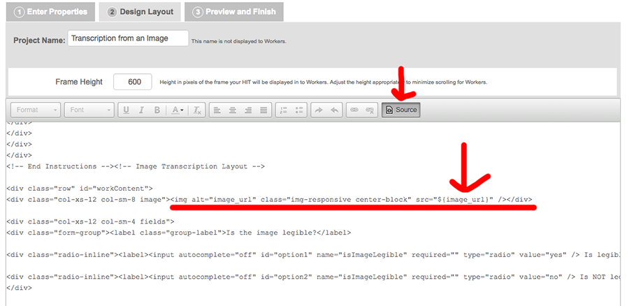
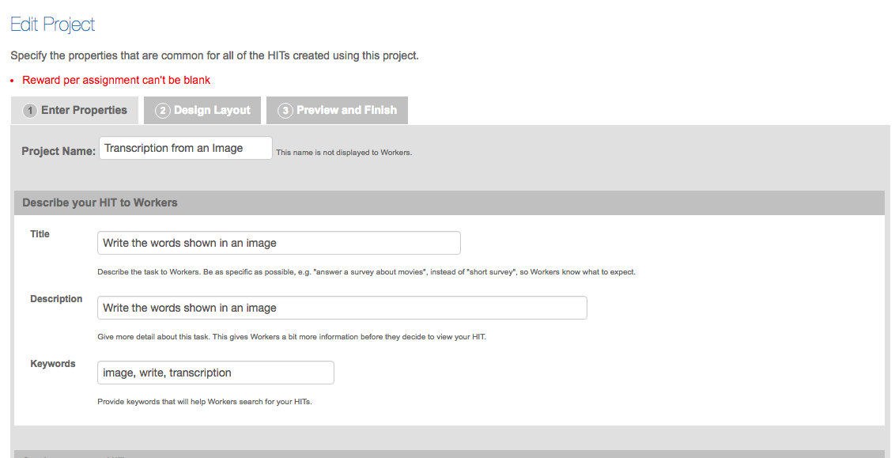
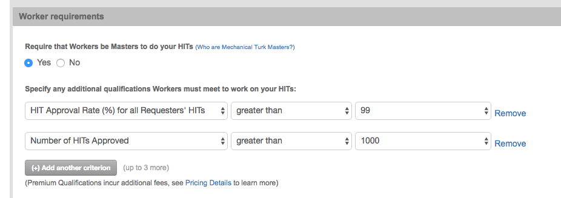
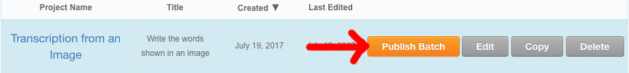
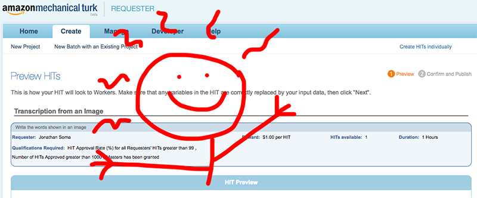
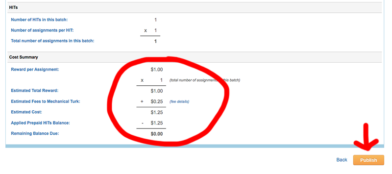

Mechanical Turk for repetitive human tasks
Computers are good at repetitive, monotonous tasks - they don’t get bored, and they do the exact same job every single time. This is great for things like converting PDFs to text.
But… what if the PDF just isn’t good enough? What if pdf2txt can’t find any text and tesseract output is just absolutely terrible?
If you had an intern you’d use them. Otherwise you can use Amazon’s Mechanical Turk.
The story behind the Mechanical Turk
I’ll tell you this in class.
Step One: Sign Up
Visit the Mechanical Turk homepage and click Get Started on the right-hand side (it’s for requesters instead of workers). Then click the Create an Account button up top.
…Not everyone can do it, though. There is a list of supported countries which sadly doesn’t include Greece! Can you use your US address? No idea!

Step Two: Preparing your data
Most of the tasks you’ll do involve processing some data - looking at a bunch of URLs, or images, or something like that. If they’re images, you need to upload them somewhere and put them in a list.
For example, if I’m asking people to copy text out of images, you should upload the images (probably to S3?) and then make a CSV file with a list of all of the iamges. Life will be easier if you call the column image_url because that’s what Amazon assumes the default is.
| image_url |
|---|
| http://www.example.com/path/to/image-1.png |
| http://www.example.com/path/to/image-2.png |
| http://www.example.com/path/to/image-3.png |
| http://www.example.com/path/to/image-4.png |
| http://www.example.com/path/to/image-5.png |
| http://www.example.com/path/to/image-6.png |
Step Three: Designing the HIT
Tasks on Mechanical Turk are called HITs - Human Intelligence Tasks. They luckily have a lot of templates you can use! You can pick from the left-hand side of the project creation page.

Note: Read through the documentation, but generally the idea is to be very specific about what you want.
Let’s start on the Design Layout page first, even though it’s step 2. When you’re creating a request, it’s pretty much a bunch of HTML with variables in it. Notice in the image transcription template you see the broken image?

That’s because the image is actually a variable. If you click View Source you’ll see it src=${image_url}. This takes the image_url column from a CSV and puts it into the form.
For example, if I wanted to add a link to the image that would open in a new window, I could use the following code.
<p><a href="${image_url}" target="_blank">View full-size image</a></p>

Step Four: Setting payment
Go ahead and fill out the properties tab, but the most important is how much should you pay? Basically, (read this for tips)[http://turkernation.com/showthread.php?21352-The-Myth-of-Low-Cost-High-Quality-on-Amazon-s-Mechanical-Turk] and don’t be an asshole. The idea is basically 1) don’t expect slave labor, and 2) don’t expect people to do a good job for a nickel an hour.
From the writeup: If you dig down into these studies and articles, you’ll find the secret: sure, if you pay $1 the work will get done, but it will be completed by scammers using “bots” (automated answering systems), people who don’t necessarily understand the instructions (as English is not their strongest language), or those who don’t care about the quality of the work they complete. That’s fine for simple work that doesn’t require mastery of the English language, but every HIT is posted with the requirement that the answers provided actually offer what is being asked.
- Figure out a target hourly wage
- See how long it takes you to do a reasonably complex one
- Do the math and come up with a per-HIT wage

Step Five: Targeting workers
Now that you have your pay set, you can also add qualifications. “Masters” are supposedly skilled workers, but you might also want to add some more bits in - maybe 99% approval and over 1000 tasks?

Step Six: Finishing up your project template
Now click Preview and Finish tab. If you’d like to see all of the variables you’re using on the page, you can click Download sample to get a sample CSV file. Otherwise scroll down to the Finish button and click it.
Step Seven: Publishing
Click Publish Batch and upload a CSV file.

Once it’s uploaded you’ll have the ability to preview the HIT. Get excited! Scroll down, click Next and then you’ll be on a page that provides you with some estimated billing details. You’ll probably be shocked, but remember: we aren’t here for slave labor, this is definitely probably maybe worth it.


Step Eight: Accepting and confirming
Once it’s all done you’ll want to confirm that the work is real, either by looking at it or having it done multiple times and comparing with some flavor of diff. Accept/approve and go away happy!